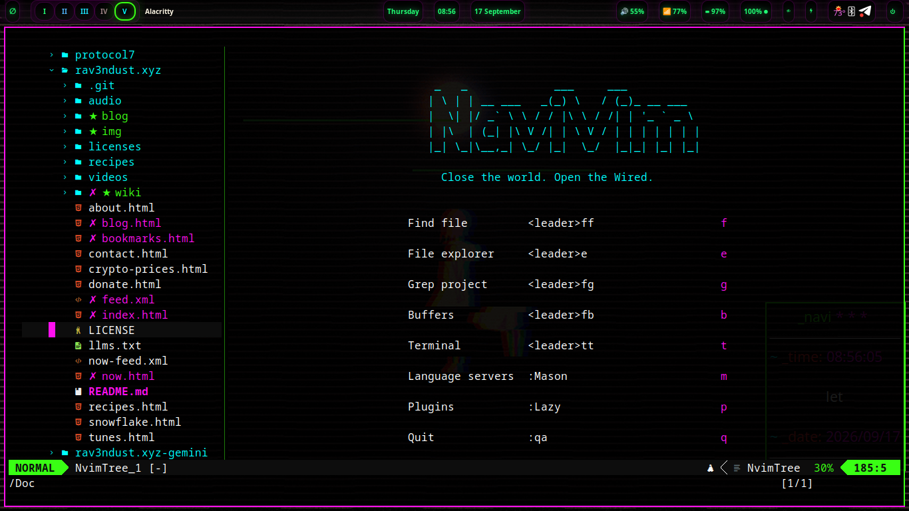

NAVI // NAVIVIM
Hand-rolled Neovim — no distro framework, just lazy.nvim and one file per feature. Navi's default editor.
Free and open source: xvoidsx/navivim.

NaviVim is the in-terminal IDE for Navi Linux — hand-rolled Neovim, no distro framework. Just lazy.nvim and one file per feature. Its ambition is a premier, best-in-class Neovim experience that feels like a cohesive whole with the system it ships on.
Leader is Space — tapped in sequence, never held. Stuck anywhere? Tap Space and wait half a second: a menu shows every shortcut available from there. You never have to memorize.
| Keys | What |
|---|---|
Ctrl+n / Space e | File explorer sidebar |
Space ua | Autocomplete on/off |
/ then Esc | Search in file, clear highlight |
Space ff / Space fg | Find files / grep project |
Space then wait | which-key shows everything |
On a Debian base today; shipping as navi's default editor from the get-go in navi 1.5 “mika” — the NaviVim update.
git clone https://github.com/xvoidsx/navivim ~/NaviVim
cd ~/NaviVim
./install.sh # full setup: apt deps, Neovim 0.11+, plugins
./install.sh --no-apt # skip apt (deps already present)
./install.sh --system # navi distro installer (as root): system-wide
# install, /etc/skel seed, default editorThe script installs Neovim from the upstream release tarball (Debian stable's 0.10 is too old), links the repo to ~/.config/nvim, seeds the nightshadeNeon theme, and syncs plugins headlessly. Language servers and formatters install via :Mason on first launch.
No framework distro underneath — every plugin is chosen on purpose, each in its own lua/plugins/*.lua file: sidebar, completion, search, LSP, treesitter, UI, git, editing, terminal, theme. The whole config stays readable enough to learn from. Plugin versions are pinned in lazy-lock.json for reproducible builds.